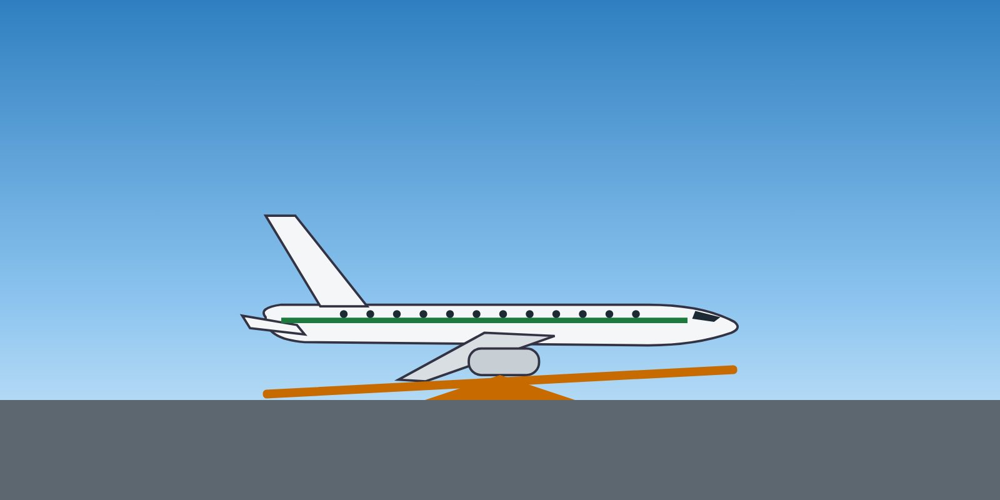

| Forward CG | Aft CG | |
|---|---|---|
| Longitudinal stability | Greater | Reduced |
| Pitch control forces | Heavier | Lighter — easy to over-control |
| Stall speed | Slightly higher | Slightly lower |
| Elevator authority | More needed to rotate and flare | Less nose-down authority for stall recovery |
| Fuel consumption | Slightly higher (more tail down-force) | Slightly lower |
Check the load sheet and the FMS entries carefully, cross-check weight and CG with the fuel and passenger figures, and be alert to unusual control forces at rotation. If the aircraft does not feel right, say so.
What is a typical effect of an aft centre of gravity?
Answer: B. An aft CG reduces stability and makes pitch forces lighter, so the aircraft is easier to over-control.
Training material only. It does not replace the Aircraft Flight Manual, FCOM, QRH, MEL or the Domestic Airlines Operations Manual, which always take precedence.